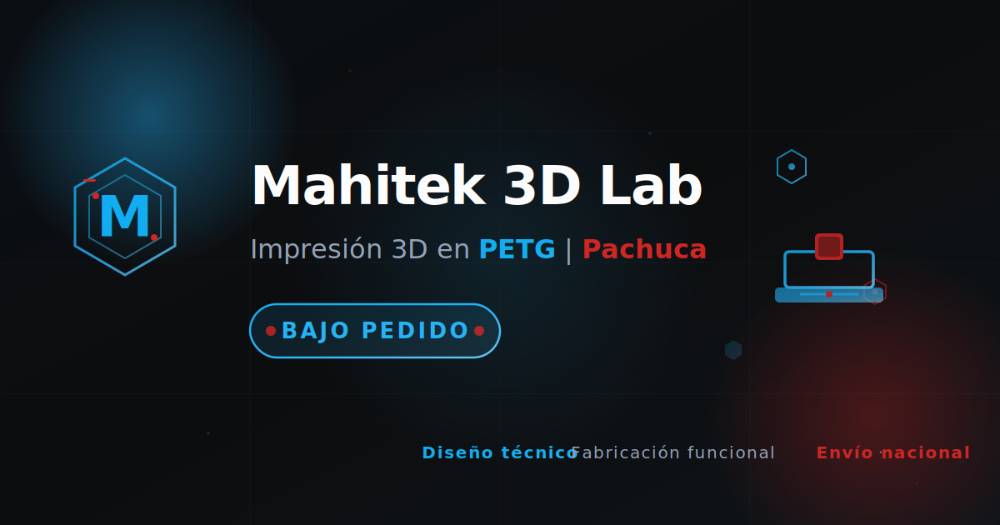

🎨 Generador de OG Image PNG
Instrucciones:
Revisa la vista previa de la imagen OG
Haz clic en
"Descargar PNG (1200x630)"
Guarda el archivo como
og-image.png
en
assets/img/
¡Listo! Las redes sociales mostrarán tu imagen profesional

📥 Descargar PNG (1200x630)
🔍 Probar en OpenGraph
📋 Validación SEO
Después de subir el PNG, valida tu imagen en:
Facebook:
Facebook Debugger
Twitter:
Twitter Card Validator
LinkedIn:
LinkedIn Post Inspector